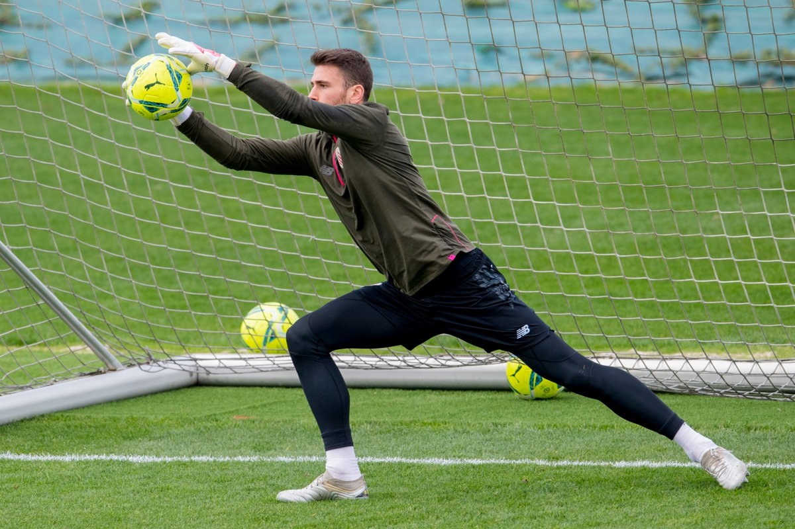
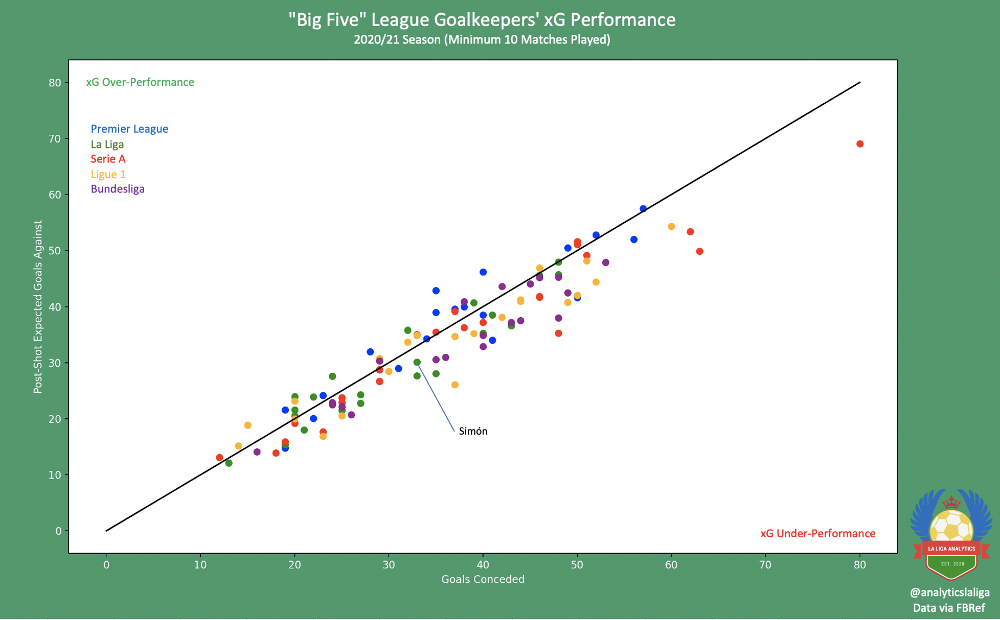
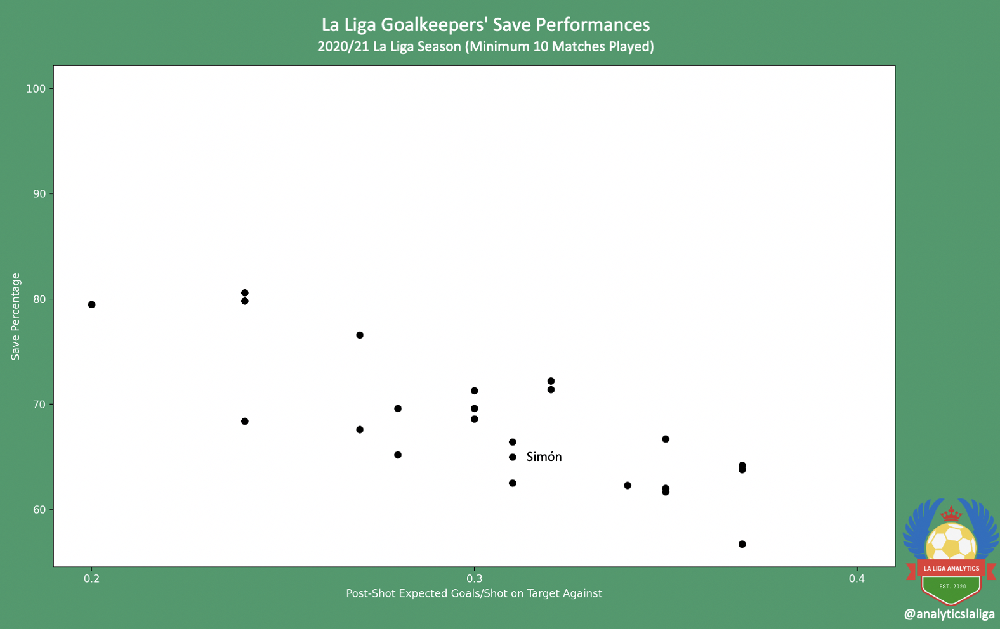
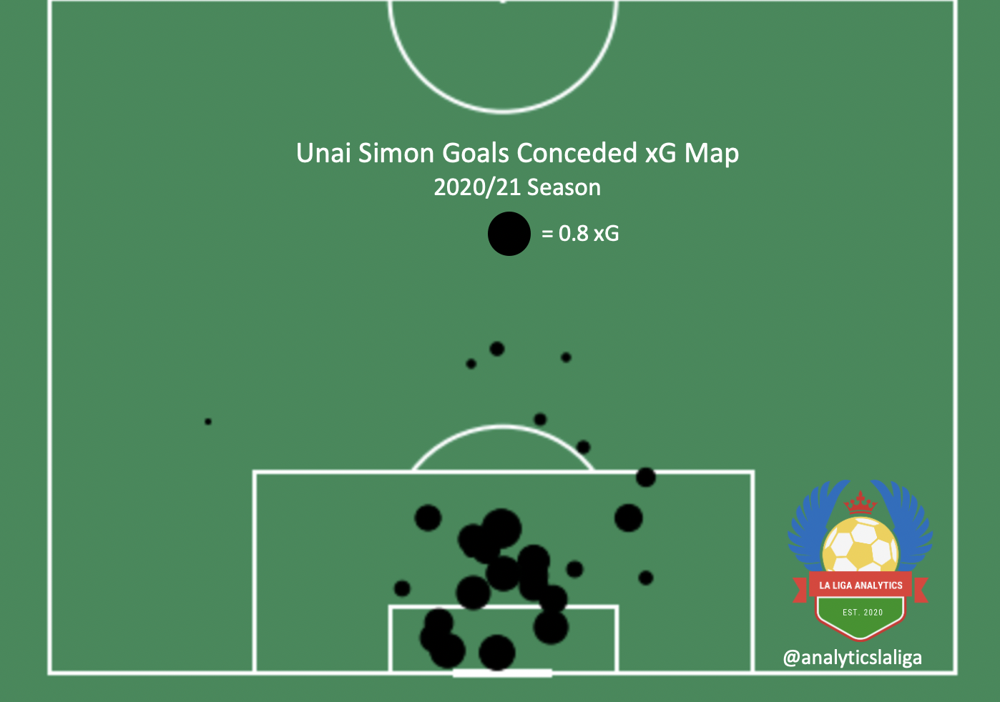
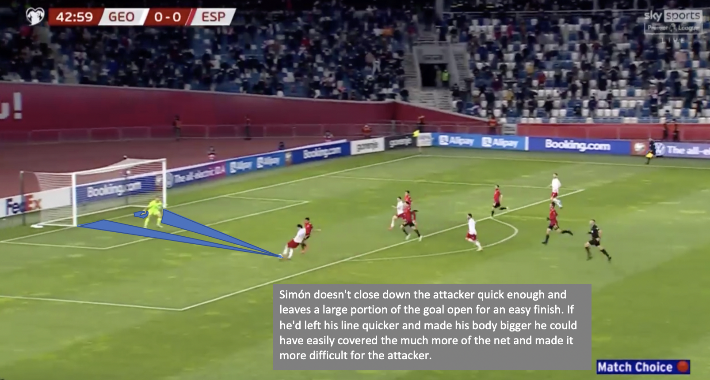

Unai Simón Scouting Report by Charlie Tuley - April 26, 2021
|
ctuley@umich.edu

Unai Simón
Club: Athletic Club (Bilbao, Spain)
Nationality: Spain
Position: Goalkeeper
Squad Number: 1
Date of Birth (Age): June 11, 1997 (23)
Dominant Foot: Right
Height: 190cm, 6’3’’
Market Value (via Transfermarkt): €27.4M
Contract Expires: June 30, 2025
All video clips are from Wyscout.com unless stated otherwise
*Note: Unai Simón is 23 years old, and has already made almost 75 appearances in La Liga. He has already established himself on the top stage, and therefore isn’t the most “scoutable” player. However, this scouting report is a much an experiment for the author to gain experience writing about the “ins and outs” of professional goalkeeping as it is for the enjoyment of the readers. With that, please enjoy!
Background
Born in Álava, Spain in 1997, Unai Simón began his youth football career with Aurrera de Vitoria, a team based in Vitoria-Gasteiz. He would go on to join Athletic Club’s youth system in 2014, where he worked his way through the Basque club’s reserve sides until his promotion to the first team in the 2018/19 season.
Simón only made 11 appearances for Athletic Club during the 2018/19 season, as Iago Herrerin was favored over him by then manager Eduardo Berrizo (who was later replaced that season by Gaizka Garitano). It was in the 2019/20 season that Simon was given the starting role for Athletic Club. He played 34 matches in La Liga (and four in the Copa del Rey), and finished third in La Liga’s Zamora Trophy ranking with 12 clean sheets.
This season, Simón has played almost every minute in La Liga for Athletic Club, as well as helping his side win the Supercopa de España by beating both Real Madrid and Barcelona. He’s currently on 8 clean sheets (conceding 34 goals) in 32 La Liga appearances, and Athletic Club sits 10th in the league.
On the National Team side of things, Simón worked his way through the Spanish Team’s youth sides between 2013 and 2019, and he was given the call up to the first team in 2020. Now, he’s expected to be Spain’s Number 1 at the Euros this summer, replacing long-time stalwart David de Gea.
On the Ball
When looking at ball distribution, Simón can be considered average relative to other goalkeepers across La Liga. When it comes to goal kicks, Simón takes 80.2% of them long, which is around the median for La Liga goalkeepers (and like all goal kicks, when taken long Simón’s are completed at roughly a 50% rate). When on the ball in open play, Simón chooses to go long (punting the ball, long passes) 43.3% of the time, and he completes these passes with 44.9% efficiency (via FBRef.com). Simón also attempts the third-most thrown/rolled passes out of all La Liga goalkeepers (5.29 per 90, via FBRef.com), a glimpse into Simón’s desire to play the ball quickly and get his team onto counter attacks. His vision is generally good, and he usually picks out most passes well.
While Unai Simón is good on the ball, I wouldn’t go so far to classify him as a “ball-playing goalkeeper.” He passes quite well, attempting 22 non-goal kick passes each match (via FBRef.com). He completes his short passes with 97.1% accuracy, standard numbers for a goalkeeper, as most of his passes face very little pressure from the opposition. Every so often, however, he is put under some pressure by his opponents, and while he generally handles it well, he does make the occasional mistake. Simón very rarely is let down by his technical abilities, it is usually his decision-making that costs him, and this is evident when watching him in possession. An example of this can be seen below: Simón has easy options to play to, he has two teammates who have acres of space that are an easy pass away, but Simón chooses the much more ambitious long pass, which ends up falling to an opponent.
Phases of play like this can be found relatively often when watching Simón, and they could be eliminated if he consistently chooses the simple pass as opposed to the high-risk, high-reward play.
Off the Ball/Goalkeeping Style
It’s very difficult to analyze goalkeeping performances using data and graphics, and the visualizations below were created just to give an introductory sense of Simón’s skill level. As can be seen from the first plot, while Simón has conceded less goals (and less post-shot expected goals) than more than half of the “Big Five” leagues’ goalkeepers, he is still underperforming on his PSxG by 2.9 goals. This means that Unai Simón has theoretically let in almost three more goals than he statistically should have this season.


The second plot shows how Simón ranks amongst other La Liga goalkeepers in terms of his save percentage, factoring in the difficulty of shots that he’s facing. All of the shots that Unai Simón has faced this season (that were on target) have had an average PSxG value of 0.32, which is pretty high considering how good Athletic Club’s defense typically is. As expected, when facing better shots, a keeper would have a lower save percentage, which is what can be seen with Simón (there is an obvious correlation between shot difficulty and save percentage).

Finally, there’s the expected goals map for every goal that Simón has conceded in La Liga this season. This is only to give the reader a feel for the locations that Simón tends to concede from, nothing more. As can be seen in the graphic, the vast majority of the goals scored against Athletic Club come from centrally inside the penalty area, and most of the goals are high-probability scoring chances. There are a few goals from outside the penalty area, but most of those were “unsaveable” shots, like Lionel Messi’s top-corner freekick from back in January and Toni Kroos’ lazer from December.
Now that the data’s out of the way, Simón’s goalkeeping style can be discussed. To go into detail regarding each small aspect of Simón’s net-minding skills would make this report far too long, so a more “overview” style will be taken for this portion.
- Simón has some of the best reflexes in the business. He uses his large wingspan and frame well, and moves very quickly for someone of his size. 59% of his saves this season have been reflex saves.
- Along the same lines, Simón goes to ground very well. He is quick to get his arms down, and is capable of using his feet to block shots as well. It’s a bit of a cop-out comparison, but he’s similar to his compatriot David de Gea in his lunging efforts to block shots with his legs.
- Simón favors a good punch. He’ll often elect to punch away crosses rather than to catch them. This has both advantages and disadvantages, as it’ll often sacrifice Athletic Club regaining the ball for a better chance of Simón getting the ball out of a dangerous area. This extends to shots as well as crosses. Simón will often choose to parry shots wide or over the bar as opposed to catching them, once again sacrificing possession for security.
- Despite this, Simón isn’t too ready to leave his line. He’s not very aggressive when it comes to being attacking and winning crosses. He ranks quite low amongst La Liga goalkeepers in percentage of crosses won; however, it does need to be noted that Athletic Club are quite good at defending crosses, and their defenders are notably good at winning aerial duels.
- For the most part, Simón’s anticipation and positioning are good. He usually judges accurately where the ball is moving, and can position himself in the best position possible to defend his net. He’s active at all times, making small adjustments to his body position so that he’s always ready to face a shot. However, there are some times when Simón struggles with his positioning, like when his opponents have high probability chances (1v1’s with the keeper, receiving the ball with space in the penalty area, etc.). Obviously, the odds are against the goalkeeper in these situations, but Simón saves even less of these shots than he should. He often fails to close down his opponents, to smother them, and he’ll remain on his line, making it very easy for his opponents to score (obviously it isn’t the goalkeeper’s fault in these situations, but some of these chances are saveable). The clip below, from the recent International Break, is an example of Simón’s positioning letting him down.

- Simón is still quite error-prone. He suffers from occasional lapses in concentration and decision making, and this costs his team goals. This is the main thing that prevents him from being an elite keeper at the moment, what separates him from the best in the world. The best keepers consistently perform at the highest level, only very rarely making errors. However, Simón is still young, and mistakes are to be expected from a maturing player. If he can clear up these few errors, he’ll put himself in a great position to make it to the top.
Verdict
Simón is obviously very talented, he’s one of the best young goalkeepers in the world. He already has quite a bit of top-level experience at the age of 23, and I believe that he’d be comfortable making the jump to an even bigger club.
This (in my opinion), will be the biggest factor in determining how successful Simón will be: which club he’s playing for. While Athletic Club are a good side with a talented defense (given the players that they have available), Simón could vault himself into the “best-in-the-world” category if he joins a team with an elite defensive unit. If he joins a side that can limit the quality and quantity of the shots that he faces, I believe that he can become one of the “best goalkeepers in the world” (in the public eye of course, as people tend to overrate goalkeepers that play with world class defenses, as they usually have very little to do).
If he decides to remain at Athletic Club for the next few years, I can see him easily becoming one of the top five best goalkeepers in La Liga (I don’t see him hitting ter Stegen, Oblak or Courtois levels anytime soon though). Simón is an unusual position where I believe that his entire future rests on which club he plays for, and it’ll be very interesting to see if he remains with his boyhood club, or if he chooses to shoot for the moon and join a top side.